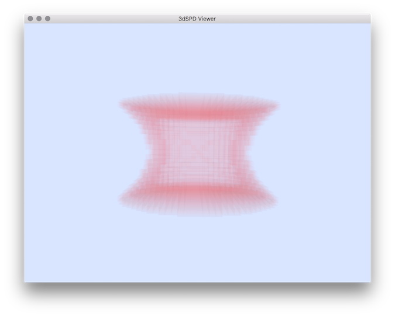

Applies shape measures for comparing two volumetric images A and B (shape defined from thresholds).
Usefull to determine classical statistics like false positive related stats.
Usage: volShapeMetrics –volA <volAFilename> –volB <volBFilename>
Allowed options are :
Positionals:
1 TEXT:FILE REQUIRED Input filename of volume A (vol format, and other pgm3d can also be used).
2 TEXT:FILE REQUIRED Input filename of volume B (vol format, and other pgm3d can also be used).
Options:
-h,--help Print this help message and exit
-a,--volA TEXT:FILE REQUIRED Input filename of volume A (vol format, and other pgm3d can also be used).
-b,--volB TEXT:FILE REQUIRED Input filename of volume B (vol format, and other pgm3d can also be used).
--aMin INT=0 min threshold for a voxel to be considered as belonging to the object of volume A. (default 0)
--aMax INT=128 max threshold for a voxel to be considered as belonging to the object of volume A. (default 128)
--bMin INT=0 min threshold for a voxel to be considered as belonging to the object of volume B. (default 0)
--bMax INT=128 max threshold for a voxel to be considered as belonging to the object of volume B. (default 128)
--noDistanceComparisons to avoid to apply distance map computation if the distance comparaison are not needed.
--distancesFromBnotInAOnly apply distance map measures only for voxels of B which are not in A (else the measure are given from all distances of the object B).
--displayTFstats Change the comparison diplay by using the true/false/positive/negative notation and considering the shape A as reference. It also display precision/recall/f-mean statistics.
--exportSDP Export voxels belonging to each categorie (voxels of ( B in A) , (NOT in B and NOT in A), (B and NOT in A) and (Voxels of NOT in B and in A)).
Example:
To test this tool, we need to generate a volumetric file to be compared to an original one:
# generation of the file "eroded.vol" from DGtal examples:
$ $DGtal/build/examples/tutorial-examples/FMMErosion
Then we can apply comparisons of the two shapes:
$ volShapeMetrics -a eroded.vol --aMin 1 --aMax 255 -b $DGtal/examples/samples/cat10.vol --bMin 1 --bMax 255 --displayTFstats --exportSDP
You should obtain different comparison measures and you can display the set of voxels associated to the false positive ( falsePos.sdp ):
$ 3dSDPViewer -i falsePos.sdp -c 250 40 40 5

Resulting False positive set of voxels.
- See also
- volShapeMetrics.cpp